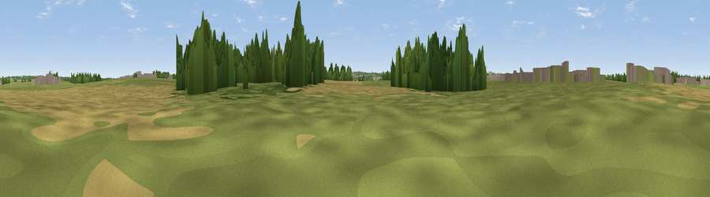

Viewpoint near Dinnington
#42404 in England · top 91% of its area beats it · near DinningtonThe view, rendered

A 360° render of this exact spot computed from the terrain model, tree cover and land cover — summer colours, afternoon light, calibrated against photographs of famous viewpoints. Real trees, hedges and buildings will differ in detail.
The panorama
Grey silhouette: terrain skyline in each direction (720 bearings, Earth curvature and refraction included). Dashed green: skyline with trees (+15 m) and buildings (+8 m) as obstacles. Blue strip: how far the ground is visible on each bearing.
Where the view opens
Wedge length = distance to the farthest visible ground on that bearing (vegetation-aware). Rings at 10, 25 and 50 km.
What fills the view
41% grassland · 34% cropland · 19% woodland · 6% built-up
Angular shares of the visible panorama (visual magnitude), not map area. Landscape diversity 0.53 (0–1 Shannon).
Key numbers
More beautiful places nearby
The staircase of upgrades: each row has a higher view potential than everything closer. Driving times are estimates from straight-line distance, calibrated against real road routing — check an actual route before setting out.
| Place | Direction | Drive | Score |
|---|---|---|---|
| Viewpoint near Prestwick | WSW · 3 km | ~8 min | 45.4 |
| Weetslade Colliery Country Park | E · 4 km | ~9 min | 58.5 |
| Northumberlandia viewpoint | NNE · 6 km | ~12 min | 68.7 |
| White Hill | SSE · 13 km | ~25 min | 69.8 |
| Viewpoint near Sunniside | S · 14 km | ~25 min | 77.6 |
| Pontop Pike | SSW · 20 km | ~34 min | 77.8 |
| Viewpoint near Rothbury | NNW · 31 km | ~49 min | 81.1 |
| Dove Crag | NNW · 32 km | ~49 min | 82.3 |
55.04159, -1.66852 · source: osm viewpoint · position refined by local search. Computed location — check access rights before visiting.